Variation
Each child invents a movement and records three samples of it. The model is trained, and the class tries someone else’s gesture. It fails, because the model has only ever seen one person perform it, one way.
A classroom platform where children train a shared machine-learning model with their own gestures, and discover how their data shapes what it learns.
MoveML turns the whole class into a source of training data. Children wear micro:bit wristbands, record movements and test a model built from everyone’s samples. A shared teacher display makes its behaviour available for discussion.
The work covered the student and teacher interfaces, front-end components built on an existing React and Chakra UI foundation, the storyboard for the session flow, and analysis of the evaluation findings. The Animal Buddies wearable concept came after the study.
Background / Why MoveML
Recommendation feeds, voice assistants, camera filters and smart watches are all machine learning, and all of it is invisible at the point of use. Where ML does get taught, it is usually taught as a finished black box: here is a model, here is what it predicts.
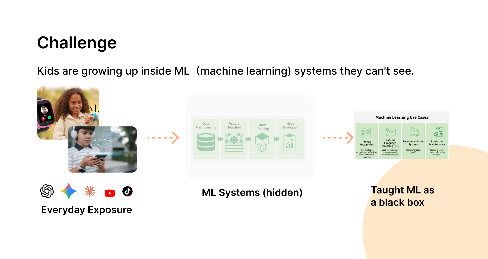
The benchmark covered the four tools children already use, which are Google Teachable Machine, Machine Learning for Kids, LearningML and micro:bit CreateAI. It showed how much they already get right.
A child starts training within minutes.
They make machine learning classroom-ready.
A model becomes something you feel, not only something you see.
What none of them answers is the next question. All four solve how do kids train a model? None solves how do kids notice what shapes the model? Training is individual: one learner records their own data, tests it, and never sees how their examples compare with anyone else’s.
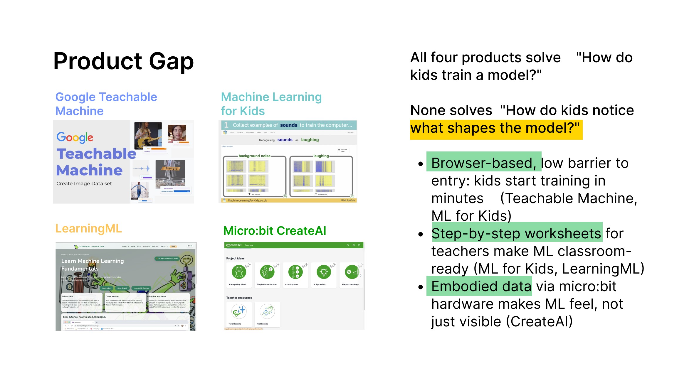
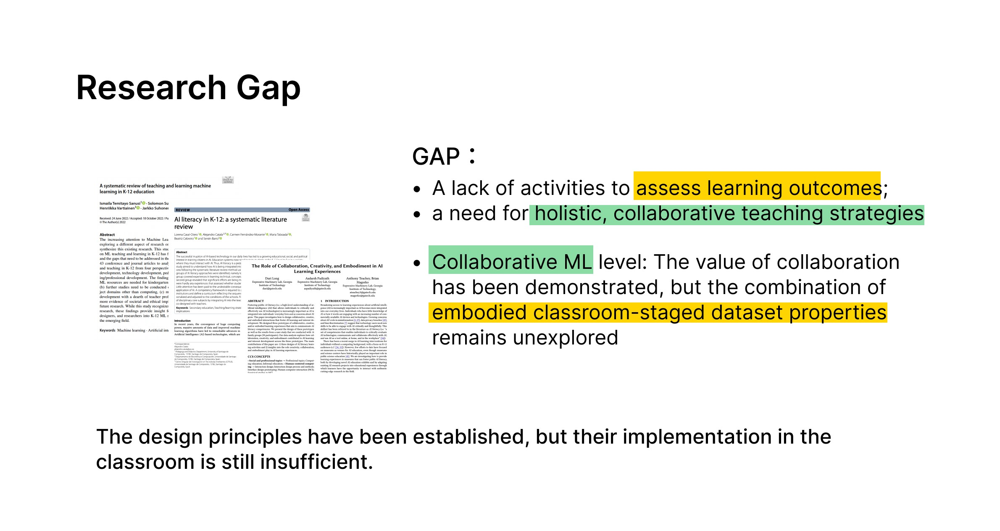
The micro:bit is the reason the activity can be physical at all. It is already in classrooms, children have often met it before, and it carries an accelerometer, so a gesture becomes a data sample without anyone setting up equipment. Extending that platform, rather than building a new one, keeps the unfamiliar part of the lesson on the machine learning.
MoveML takes what CreateAI makes possible for one child and moves it to the whole room: a single shared model, trained by everyone at once, where variation, consistency and balance in the data stop being definitions and become things the class can watch happen.
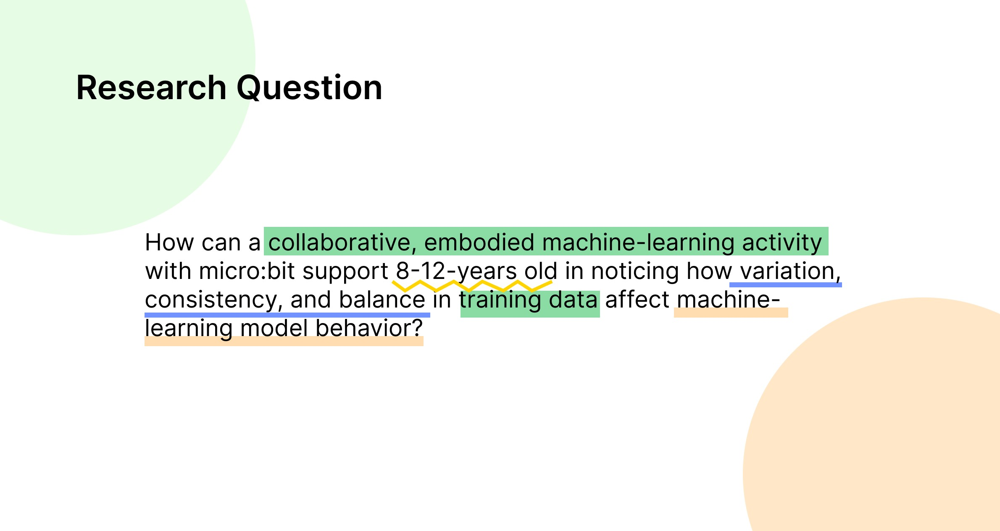
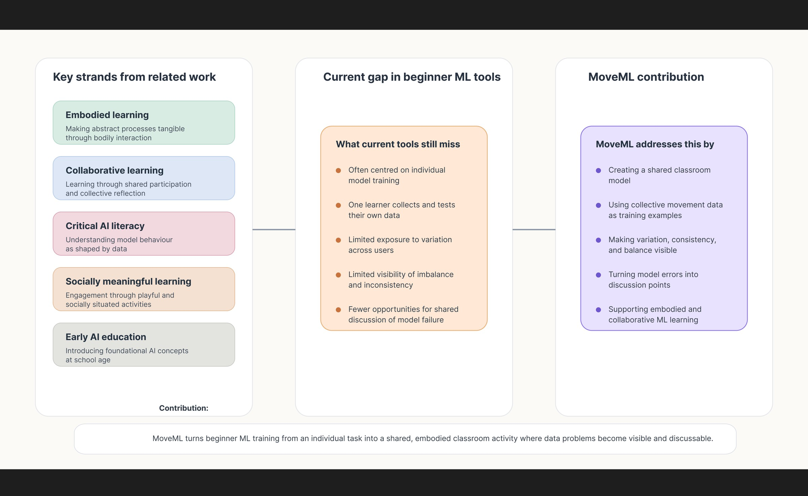
01 / The experience
The design challenge was to make training data tangible: something children could create, compare and question together. A session ran three rounds of the same loop, about ten minutes each.
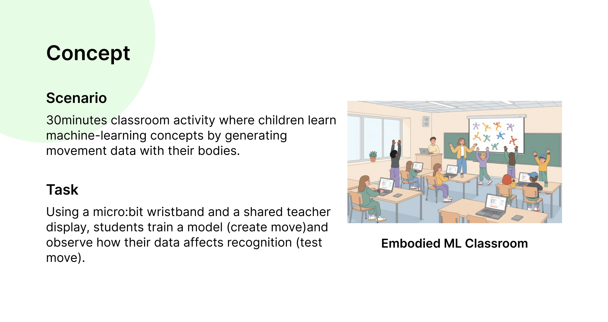
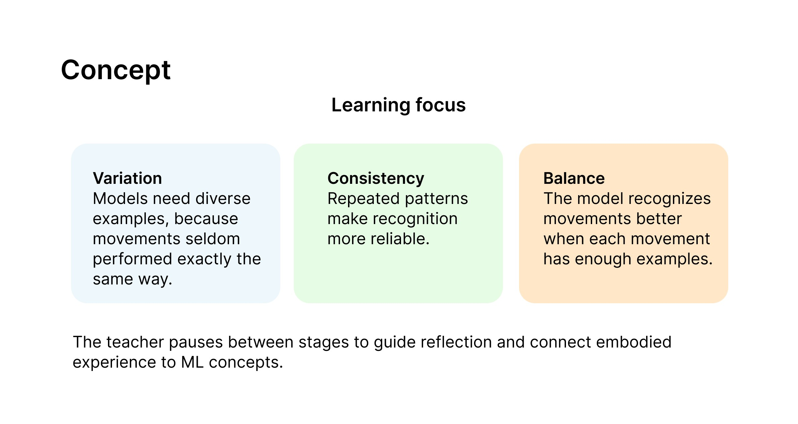
A wrist-worn micro:bit captures movement. Children contribute labelled gesture samples.
The teacher coordinates collection and trains one model using the class’s shared dataset.
The class tries the model, observes its mistakes and considers what needs to change in the data.
The activity
Each round of the session was built to surface one property of training data through experience rather than explanation. The concepts were never named in advance.
Each child invents a movement and records three samples of it. The model is trained, and the class tries someone else’s gesture. It fails, because the model has only ever seen one person perform it, one way.
Everyone records the same movement ten times. Recognition improves immediately, and the class can say why: the model has now seen many versions of the same thing.
That shared gesture now dominates the dataset. The model starts predicting it for almost everything, until the children even out the distribution themselves.
02 / Interface as translation
I treated role separation as an information-architecture decision. Students need a clear next action; teachers need to understand and coordinate the whole session.
Onboarding establishes identity. Gesture cards and progress indicators turn recording into a concrete task, helping children connect their actions to samples.
Connected students, sample counts, training state and predictions support decisions about when to move the activity forward.
A closer look / collection states
The prototype’s progress card connects a gesture name, sample target and completion state. Try the state change below to see how that relationship becomes visible.
Interactive explanation adapted from the original progress-card components, using illustrative data. Recording clarity still needed improvement in the evaluated prototype.
1 sample collected. 2 more to reach the target.
Prototype
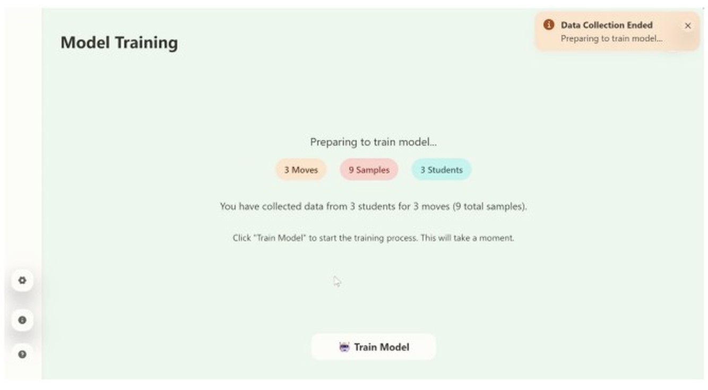
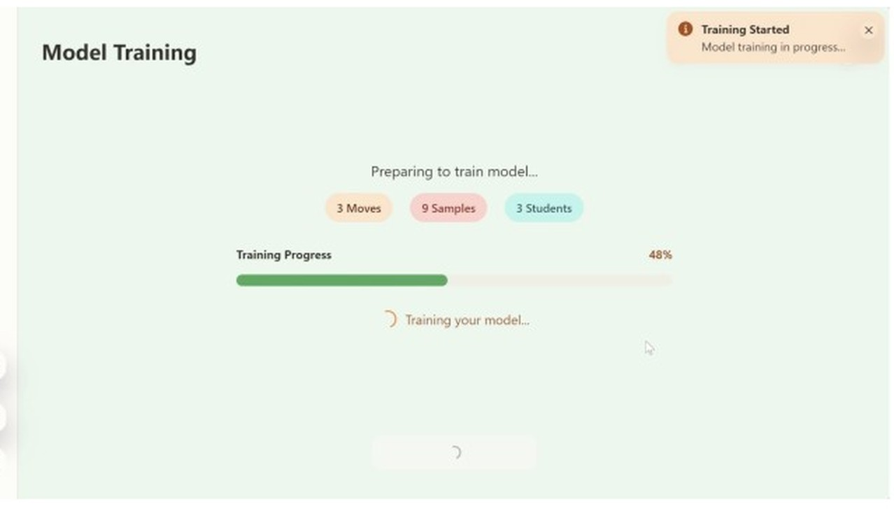
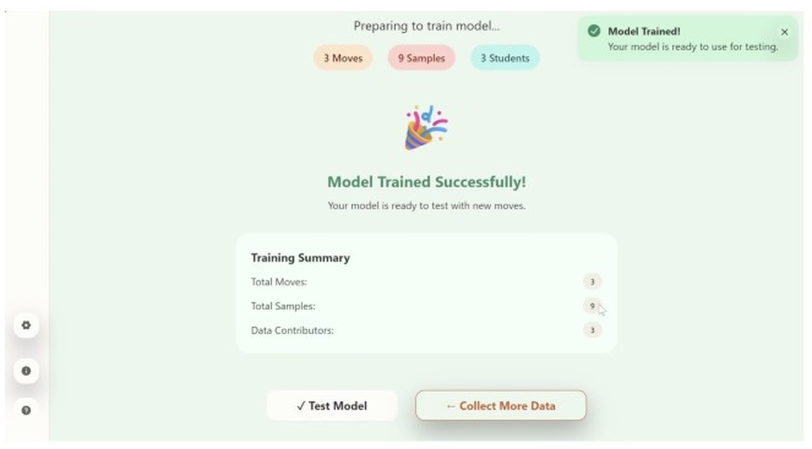
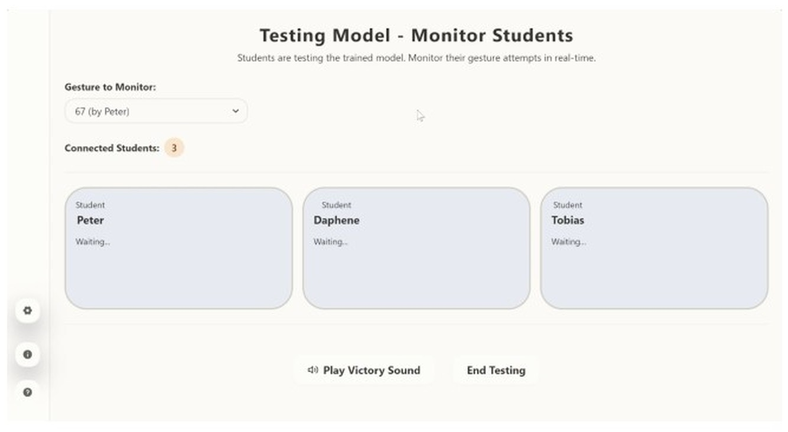
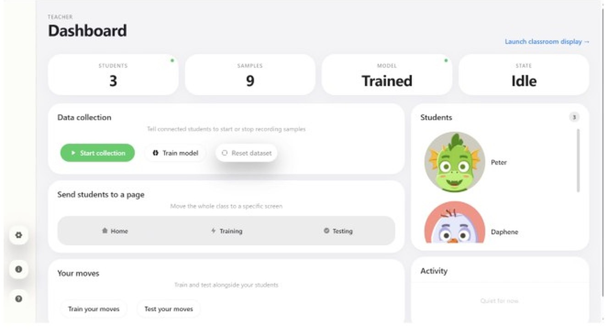
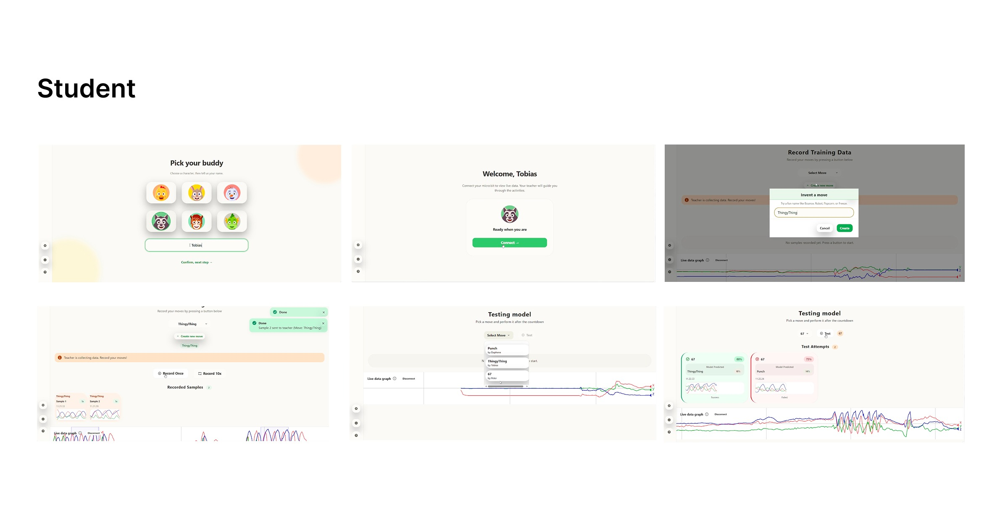
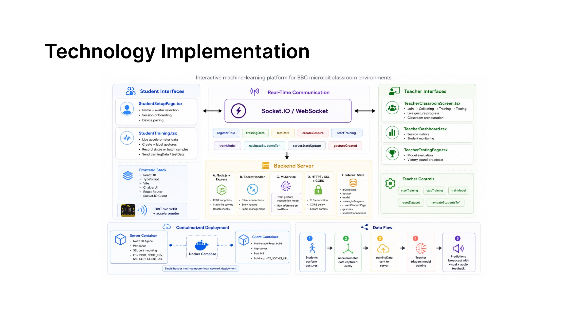
03 / A key design decision
A wrong prediction can reveal the relationship between a model and its data. I kept model state and prediction outcomes visible so the teacher could use them as shared material for reflection.
Observed during evaluation
Once every group had recorded ten samples of the same shared movement, it stood at roughly forty samples while the earlier individual gestures had three each. The model then predicted the dominant class regardless of what was performed. Students noticed this themselves and explained it.
These explanations mattered more to me than a correct prediction: children were beginning to reason about the data behind the output.
04 / Evidence & limits
The high-fidelity prototype was evaluated in a classroom at Aarhus University.
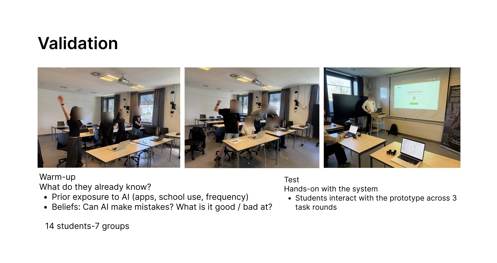
What the study suggested
Discussion revealed emerging explanations of sample imbalance and movement variation. Physical activity also sustained participation across the sessions.
Where the interaction broke down
Some students could not tell when to move or when recording had started. Setup needed facilitator help; a countdown sound was one participant’s suggestion.
What remains uncertain
The study was small and researcher-facilitated. Some children struggled with the UEQ wording, so I treated those scores as supplementary evidence, not proof of learning gains.
05 / Individual follow-up concept
Children invested attention in choosing avatars, but those identities had little role afterwards. Feedback on the bare wristband suggested an opportunity to connect the physical and digital experience.
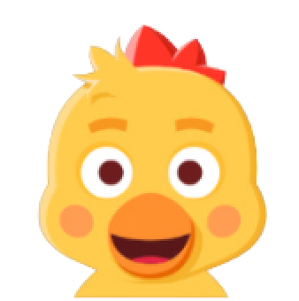
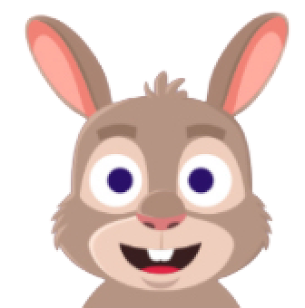
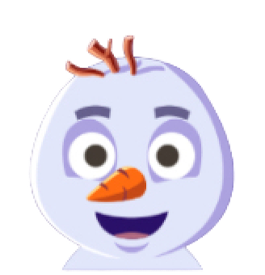
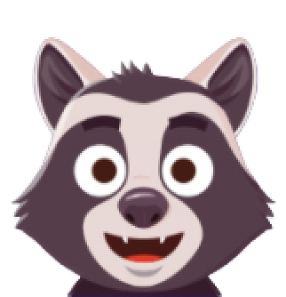
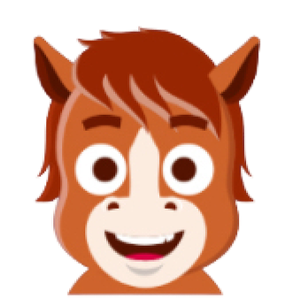
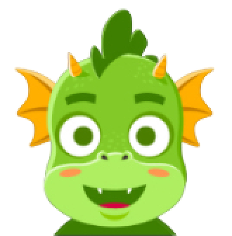
The avatar assets in the supplied source build. (The course report describes eight options at the time of the study.) The next question was how these identities could stay meaningful beyond onboarding.
A family of animal wearables could connect a child’s on-screen identity to the device they wear and the samples they contribute.
The design has practical constraints: the display and buttons must remain accessible, the battery must be stable, and the case and strap must accommodate different wrists.
Light, sound or display feedback could make recording and prediction more tangible. These are directions for a future iteration, not tested features of the concept.
The concept board is preserved at its available quality. A higher-resolution design source is needed for larger presentation.
06 / Reflection
Making the model legible required understanding training data and prediction failures. Visual clarity depended on that conceptual understanding.
Model state was visible, but recording time was not communicated well enough. Explicit timing and multimodal feedback would be priorities in the next iteration.
The interface still repeated a single-user flow. Pair work and facilitation created much of the collaboration. A future design should support shared roles and participation directly.
I came to see the interface as one contribution within a larger learning experience, one that only works when the physical device, the model and classroom facilitation work together.